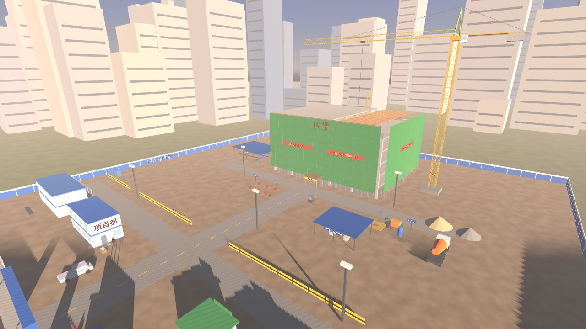
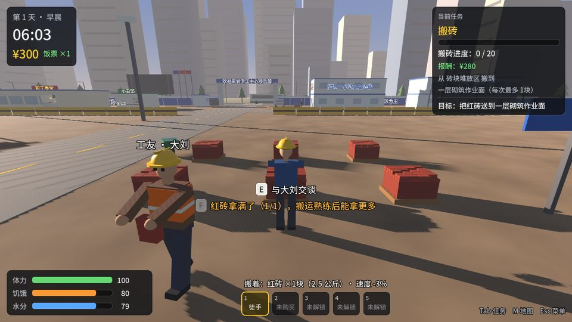
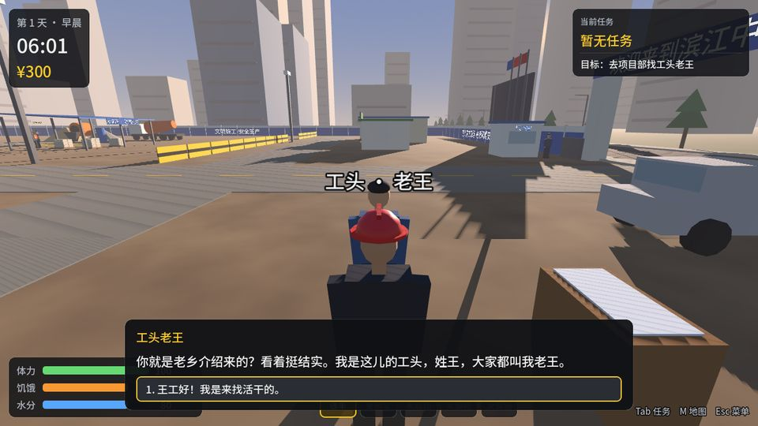
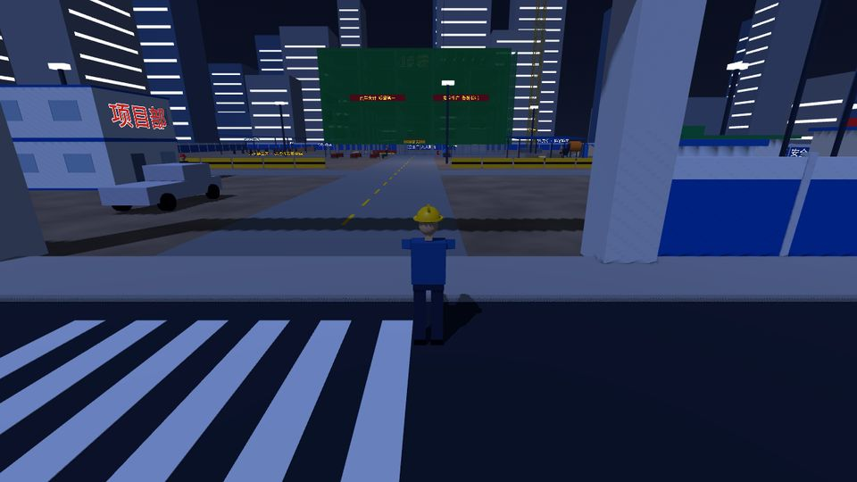

← 返回游戏中心
Ooglex Games · 原创 3D 网页游戏
BRICK BY BRICKVERSION 0.1
你坐着一辆破旧大巴来到大城市，身上只有 300 元、一部旧手机和一个行李包。工头老王递来一顶安全帽：「一天 280，管一顿饭，干不干？」——从临时工干起，搬砖、挣钱、吃饭、睡觉，一天天在工地上站稳脚跟。
免下载安装 · 电脑和手机浏览器都能玩 · 存档保存在你自己的浏览器里

网页版实机截图 · 当前为灰盒原型画面（几何体占位模型）
类型第三人称 3D · 工地模拟 / 打工 / 生存成长
版本BRICK BY BRICK V0.1
首次加载约 40 MB（压缩传输约 11 MB），之后浏览器缓存
引擎Godot 4 · GDScript · WebGL 2
故事
天刚亮，你在「滨江中心」项目的大门口下了车。效果图上写着：建成后高 328 米，全城第一高楼。
「一天 280，管一顿饭，干不干？」—— 工头老王
接下老王派的活，去砖块堆放区拿砖，送到施工楼一层的砌筑作业面；力气练出来了，一次就能多搬几块。收工后去食堂吃口热饭，回宿舍睡一觉，第二天接着干。你搬的每一块砖，将来都砌在这栋楼里。
一天的循环
- 找老王接活项目部门口，按 E 对话，选「干！」
- 去砖堆拿砖按 F 拿一块，再按 F 多拿一块
- 送进黄框走进卸货区放下，才算进度
- 领工资搬够 20 块，¥280 直接到账
- 吃饭喝水食堂盒饭、凉茶桶、小卖部
- 注意体力跑步、扛重物都掉体力
- 回宿舍睡觉体力回满，进入第二天
- 越干越熟练一次能搬 1 → 2 → 4 → 6 块
游戏画面

砖块堆放区：拿砖、看任务进度与体力

和工头老王对话、接活

昼夜变化：天黑收工，回宿舍睡觉
操作说明
电脑（键盘 + 鼠标）
W A S D移动
Shift奔跑（消耗体力）
鼠标转动视角（先点一下画面锁定鼠标）
空格跳跃
E交互 / 对话 / 开门 / 买东西 / 睡觉
F拿起材料 / 在卸货区放下
左键施工、在卸货区放下材料
右键按住拉近镜头
1～5切换工具（徒手、劳保手套……）
Tab M任务面板 · 工地图
Esc暂停菜单（保存 / 读档 / 设置）
手机 / 平板（触屏）
左下摇杆移动
右半屏拖动转动视角
交互对话 / 开门 / 买东西 / 睡觉
拿/放拿起材料 / 在卸货区放下
跑 跳切换奔跑 · 跳跃
任务 地图 菜单右上角按钮
手机建议横屏游玩。触屏设备会自动关闭阴影、降低 3D 分辨率以保证流畅。
成长路线
- 临时工 / 搬砖工
- 熟练工
- 泥瓦工
- 钢筋工
- 机械操作员
- 班组长
- 施工主管
- 包工头
- 建筑承包商
从亲自搬 1000 块砖，到招 10 个工人各搬 1000 块，再到买叉车、接 500 万的工程——游戏会从打工模拟逐渐变成经营模拟。V0.1 目前只开放第一阶段，后面的阶段还在规划中。
V0.1已上线
- 3D 灰盒工地：大门、项目部、施工楼、塔吊、脚手架、材料区、食堂、宿舍、小卖部
- 搬砖 / 搬水泥 / 搬钢筋三种任务（通用任务系统）
- 体力、饥饿、水分、现金、搬运熟练度
- 昼夜变化、睡觉进入第二天、自动存档
V0.2规划中
独轮车、叉车、砌墙玩法、工资日结、天气（下雨停工、高温缺水）、随机事件。
V0.3 以后规划中
工人招聘与班组管理、接工程、控制成本和工期，最终参与建成全城最高的楼。
说明：本游戏为 Ooglex 原创作品，故事中的「宏远建设」「滨江中心」等公司与项目名称均为虚构。当前 V0.1 是灰盒原型，画面使用几何体占位模型。
存档保存在你当前浏览器的本地存储里：换浏览器、使用无痕模式或清除网站数据后存档会消失。
游戏需要浏览器支持 WebGL 2（新版 Chrome、Edge、Firefox、Safari 均支持）；首次打开要下载约 40 MB 的游戏引擎与资源，网速较慢时请耐心等待。